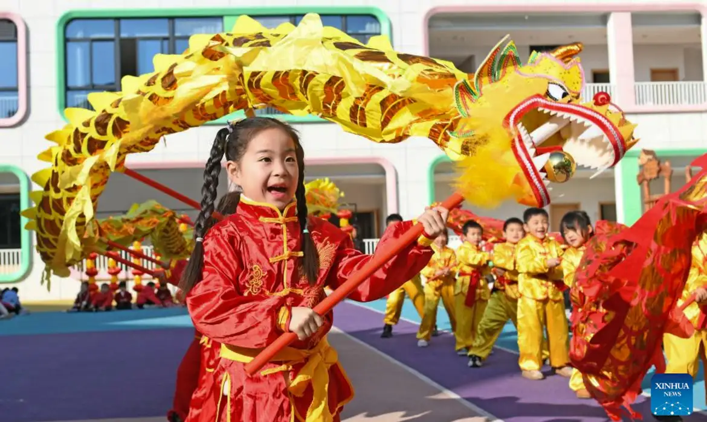

A cultura chinesa é uma das mais antigas e ricas do mundo, com mais de cinco mil anos de história. Ela valoriza muito a família, o respeito e a harmonia. Tradições como o Ano Novo Chinês, o Festival das Lanternas e o Festival da Lua são celebradas com muita alegria e cores. A arte também tem grande importância: a caligrafia, a pintura, o teatro tradicional e as artes marciais, como o kung fu e o tai chi, fazem parte do dia a dia e da identidade do povo chinês. Além disso, a culinária é um verdadeiro símbolo da cultura — cheia de sabores, especiarias e pratos típicos como o arroz frito, os rolinhos primavera e o famoso pato de Pequim.
A religião e a filosofia também moldaram profundamente o valor cultural da China. O confucionismo, o taoismo e o budismo influenciam até hoje a forma como as pessoas vivem, pensam e se relacionam. Esses ensinamentos destacam a busca pelo equilíbrio, a sabedoria adquirida com o tempo e o respeito pelas gerações mais velhas. A arquitetura chinesa, com seus telhados curvos e jardins projetados para refletir a natureza, demonstra a preocupação com a harmonia entre o ser humano e o ambiente. Nas cidades modernas, tradição e inovação se encontram: arranha-céus espelhados convivem com templos ancestrais e mercados repletos de aromas e cores. Cada prato, cada celebração e cada gesto refletem uma herança cultural que o povo chinês preserva com orgulho e transmite de geração em geração.
